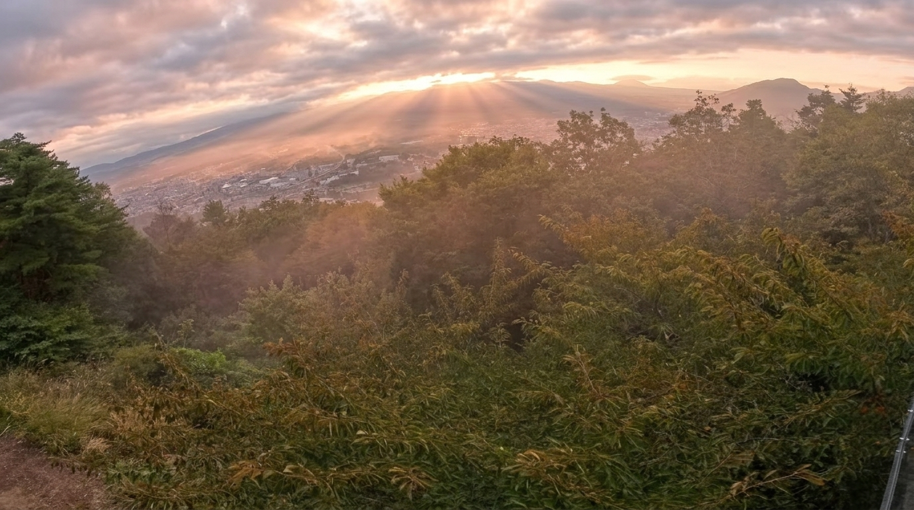
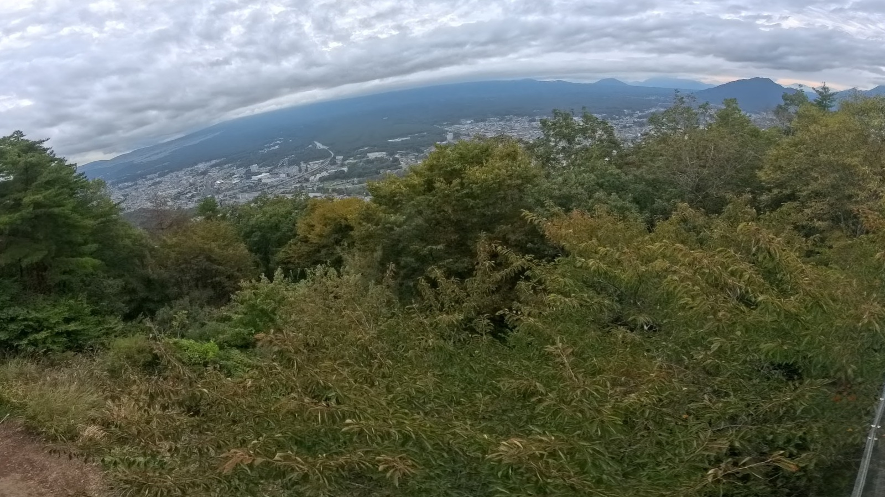
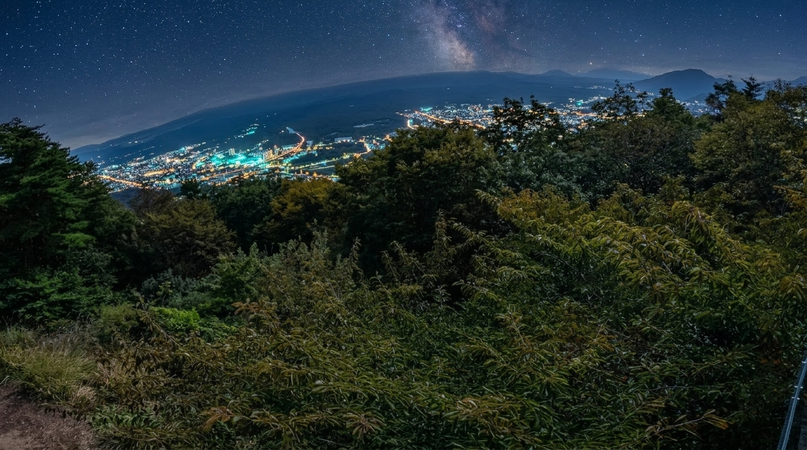
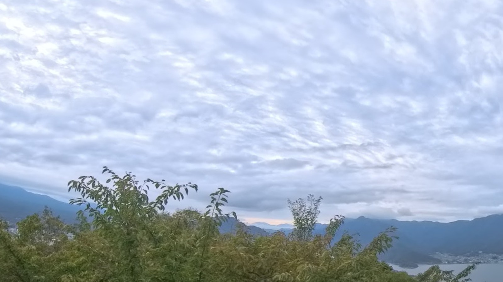
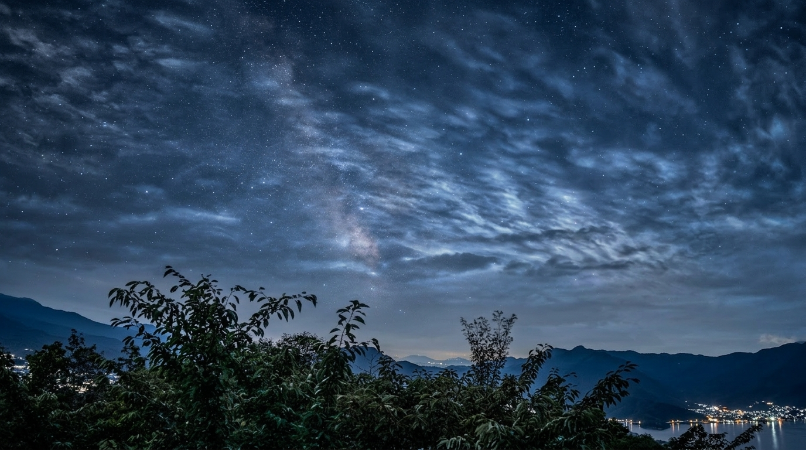
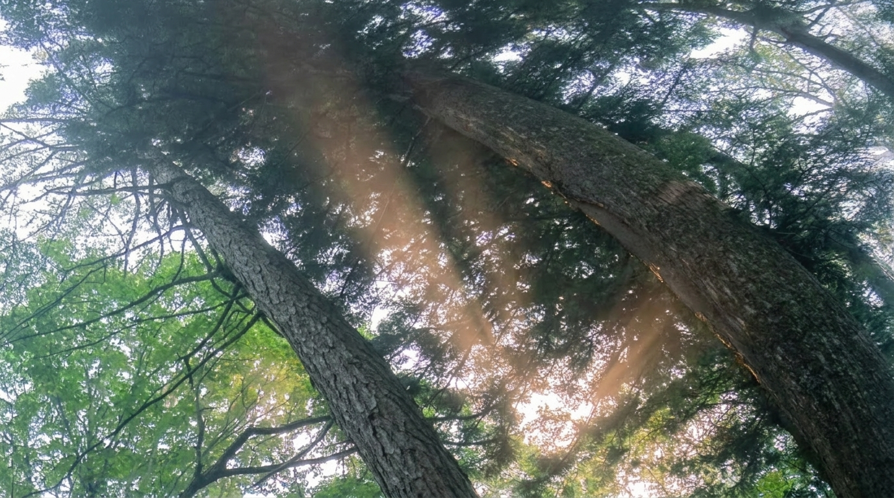
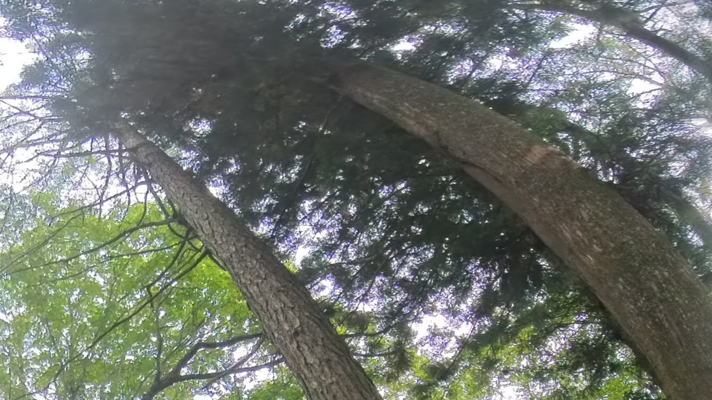
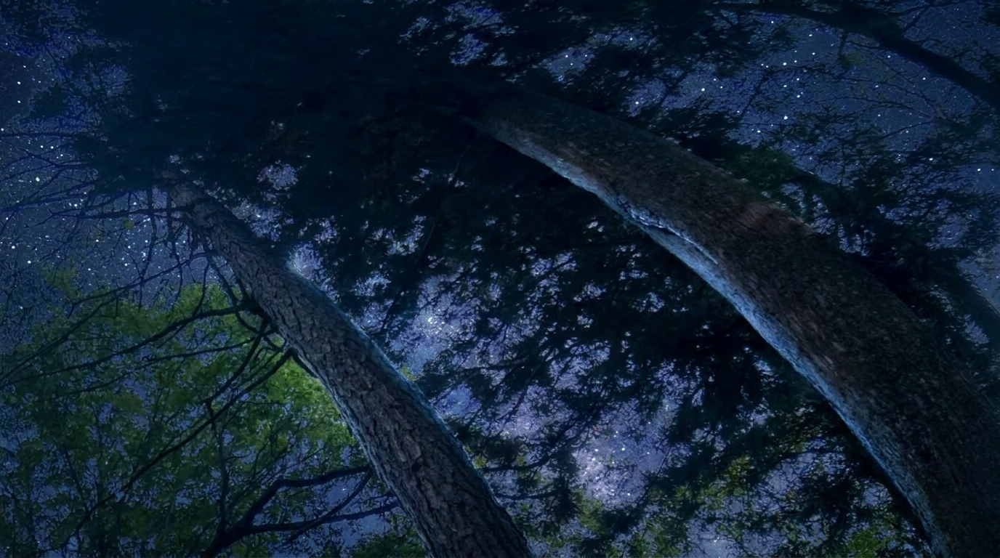

实拍母版推演    12:00 ZENITH ALBUM 01 · 24-HOUR MASTER 45.3°N · RIDGE 高山远眺 · 廿四流光 以用户 4K 全景实拍母版为机位真理锚点，推演松林峰峦自清晨第一缕斜阳至子夜冷月星汉的完整光照演替。
实拍母版推演   12:00 ZENITH ALBUM 02 · CLOUD SEA & VOLCANO 35.36°N · FUJI PEAK 富士云海 · 廿四霞光 以用户 4K 全景实拍母版为机位真理锚点，推演高空层云在破晓粉黛、正午澄澈、日暮火烧与子夜银河下的光影漫射。
实拍母版推演    12:00 ZENITH ALBUM 03 · ANCIENT CANOPY 35.38°N · CEDAR FOREST 深林天顶 · 廿四林冠 以用户 4K 全景实拍母版为仰望视角真理锚点，推演古木苍穹在晨曦丁达尔光柱、午后苍翠透光与深夜冷月穿林间的生机脉动。